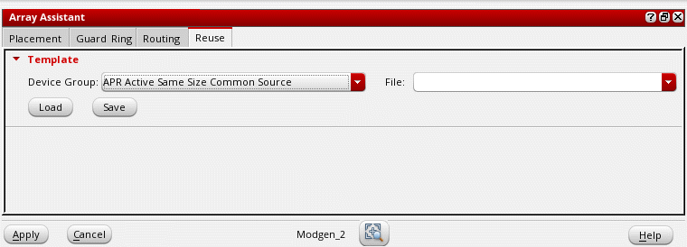

Reusing Modgen Templates Using the Array Assistant
(Layout EXL and Higher Tiers) The Reuse tab of the Array Assistant provides options to load and save settings to Modgen template files.
Loading Settings from a Modgen Template File
To load placement settings from an existing Modgen template file:
-
Open the Reuse tab of the Array Assistant.
 -
Select a Device Group.
The default is the device group to which the selected instances belong. If the selected instances are not part of any device group, the Device Group is set to Generic Group. - Select a Modgen template file name from the File drop-down list.
- Click Load to load the values stored in the file.
Settings from the selected Modgen template file are loaded into the form, which you can further customize.
Saving Settings to a Modgen Template File
You can store current placement settings from the form to a template file. After making the required updates to the form, in the Template section of the Reuse tab:
The current placement settings are stored in the specified Modgen template file. Later, you can apply this template file to other device groups to generate similar Modgens.
Related Topics
Automatic Generation of Modgens using the Array Assistant
Modgen Placement Settings in the Array Assistant
Creating Guard Rings Using the Array Assistant
Defining Modgen Topology Settings Using the Array Assistant
Return to top